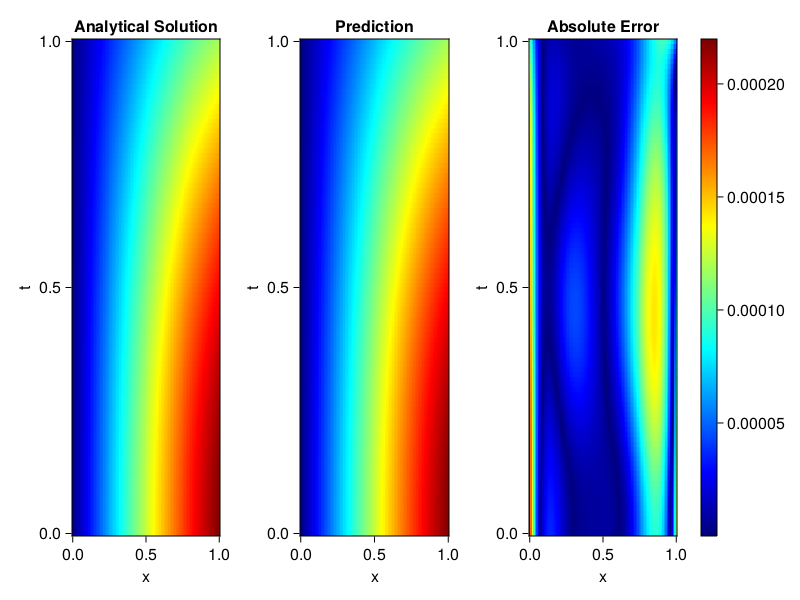
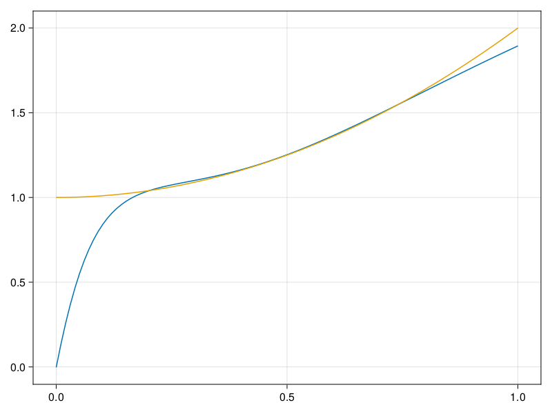

Inverse problem for the wave equation with unknown velocity field
We are going to sovle the wave equation.
using Sophon, ModelingToolkit, IntervalSets
using Optimization, OptimizationOptimJL
@parameters x, t
@variables u(..), c(..)
Dₜ = Differential(t)
Dₜ² = Differential(t)^2
Dₓ² = Differential(x)^2
s(x,t) = abs2(x) * sin(x) * cos(t)
eq = Dₜ²(u(x,t)) ~ c(x) * Dₓ²(u(x,t)) + s(x,t)
bcs = [u(x, 0) ~ sin(x),
Dₜ(u(x, 0)) ~ 0,
u(0, t) ~ 0,
u(1, t) ~ sin(1) * cos(t)]
domains = [t ∈ Interval(0.0, 1.0),
x ∈ Interval(0.0, 1.0)]
@named wave = PDESystem(eq, bcs, domains, [t,x], [u(x,t),c(x)])\[ \begin{align} \frac{\mathrm{d}^{2}}{\mathrm{d}t^{2}} u\left( x, t \right) =& c\left( x \right) \frac{\mathrm{d}^{2}}{\mathrm{d}x^{2}} u\left( x, t \right) + \cos\left( t \right) \left|x\right|^{2} \sin\left( x \right) \end{align} \]
Here the velocity field $c(x)$ is unknown, we will approximate it with a neural network.
pinn = PINN(u = FullyConnected((2,16,16,16,1), sin),
c = FullyConnected((1,16,16,1), tanh))
sampler = QuasiRandomSampler(500,100)
strategy = NonAdaptiveTraining(1, (10,10,1,1))NonAdaptiveTraining{Int64, NTuple{4, Int64}}(1, (10, 10, 1, 1))Next we generate some data of $u(x,t)$. Here we place two sensors at $x=0.1$ and $x=0.5$.
ū(x,t) = sin(x) * cos(t)
x_data = hcat(fill(0.1, 1, 50), fill(0.5, 1, 50))
t_data = repeat(range(0.0, 1.0, length = 50),2)'
input_data = [x_data; t_data]
u_data = ū.(x_data, t_data)1×100 Matrix{Float64}:
0.0998334 0.0998126 0.0997503 0.0996464 … 0.275281 0.267213 0.259035Finally we construct the inverse problem and solve it.
additional_loss(phi, θ) = sum(abs2, phi.u(input_data, θ.u) .- u_data)
prob = Sophon.discretize(wave, pinn, sampler, strategy; additional_loss=additional_loss)
@time res = Optimization.solve(prob, BFGS(), maxiters=1000)u: ComponentVector{Float64}(u = (layer_1 = (weight = [-1.2228114781869441 1.0444898904098312; 0.6969106510958817 0.616915518833094; … ; -1.137079330699873 1.0565075655744485; 0.38522765356502237 0.5896273759557313], bias = [-0.23847564012864253; 0.20978106193450188; … ; 0.0535822628164558; 0.17946588808543798;;]), layer_2 = (weight = [0.10439211445907076 -0.12457303984648604 … -0.0322667086385166 0.4438861054495814; 0.3047157509467841 -0.1647522643978021 … 0.08206643369103606 -0.44193784394939334; … ; 0.21650598295275733 0.3278103760005147 … -0.23039639466860473 0.27235801084643774; 0.0711689348396524 0.27685633428005413 … -0.4118333668654286 0.14219262856011866], bias = [-0.06456848118224551; 0.04489515569498213; … ; 0.1259274511792603; -0.0654958714738761;;]), layer_3 = (weight = [-0.5474650561740403 -0.2073342409033794 … -0.21353958727086061 0.37138054987003516; 0.4590965703651741 -0.21508272599313066 … -0.46325682795624573 -0.36556218576067684; … ; 0.390955696113521 -0.2828071829209036 … 0.013139572690731778 -0.0014163684631755642; 0.47696606293404054 -0.6324120463168121 … 0.14985246792986023 -0.18802299307450154], bias = [0.0915258883022708; -0.10040089800175378; … ; -0.11659022148131225; 0.012973054543098949;;]), layer_4 = (weight = [-0.1431273928926071 -0.5184876319871567 … -0.5518310363369544 -0.5094574164652479], bias = [-0.12074164193492837;;])), c = (layer_1 = (weight = [-2.6347922102149273; -1.1466607918040832; … ; 0.46161595769724917; 2.7543321173160886;;], bias = [-0.08962363162567669; 0.1503041613744032; … ; -0.13604202697185805; 0.2022272397160925;;]), layer_2 = (weight = [0.31195365200418335 0.5575878060265617 … 0.09313868697691767 -0.6056601658940083; 0.6036339936387014 -0.5461666467649918 … 0.6916443974487063 0.32976493929545236; … ; -0.19468775116559772 0.5169786342884658 … -0.1568131400935578 -0.11125594276601691; -0.18710192653463095 -0.35535692481166736 … -0.3137696193599615 -0.36585008999652036], bias = [-0.08035905073653364; 0.008698326064969383; … ; 0.11474936432222962; -0.01629321257782934;;]), layer_3 = (weight = [-0.6034361511766683 -0.06565341832846337 … 0.01648007950109604 0.3246400461882063], bias = [-0.15049167753754938;;])))Let's visualize the predictted solution and inferred velocity
using CairoMakie
ts = range(0, 1; length=100)
xs = range(0, 1; length=100)
u_pred = [pinn.phi.u([x, t], res.u.u)[1] for x in xs, t in ts]
c_pred = [pinn.phi.c([x], res.u.c)[1] for x in xs]
u_true = [ū(x, t) for x in xs, t in ts]
c_true = 1 .+ abs2.(xs) |> vec
axis = (xlabel="x", ylabel="t", title="Analytical Solution")
fig, ax1, hm1 = heatmap(xs, ts, u_true, axis=axis; colormap=:jet)
ax2, hm2= heatmap(fig[1, end+1], xs, ts, u_pred, axis= merge(axis, (;title = "Prediction")); colormap=:jet)
ax3, hm3 = heatmap(fig[1, end+1], xs, ts, abs.(u_true .- u_pred), axis= merge(axis, (;title = "Absolute Error")); colormap=:jet)
Colorbar(fig[:, end+1], hm3)
fig
fig, ax = lines(xs, c_pred)
lines!(ax, xs, c_true)
fig